무선설비산업기사 (2017-09-23 기출문제)
1과목: 디지털 전자회로
1. P형과 N형 사이에 샌드위치 형태의 특별한 반도체층인 진성층을 갖고 있으며, 이 층이 다이오드의 커패시턴스를 감소시켜 일반적인 다이오드보다 고주파에서 동작하며, RF스위칭용으로 사용되는 다이오드는?
- 핀(PIN) 다이오드
- 건(Gunn) 다이오드
- 임팻(IMPATT) 다이오드
- 터널(Tunnel) 다이오드
(정답률: 86%)

2. 전압 안정계수가 0.1인 정전압회로의 입력전압이 ±5[V] 변화할 때 출력전압의 변화는?
- ±0.01[mV]
- ±1.2[mV]
- ±0.2[V]
- ±0.5[V]
(정답률: 84%)
3. 다음 그림과 같은 전압궤환 Bias회로에서 IE는 얼마인가? (단, β=50, VBE=0.7[V], VCC=10[V]이다.)
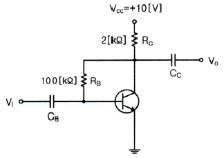
- 2.35[mA]
- 2.35[A]
- 4.6[mA]
- 4.6[A]
(정답률: 61%)
4. 다음 그림과 같은 전압궤환 바이어스회로에서 콘덴서 ‘C’에 대한 설명으로 틀린 것은?
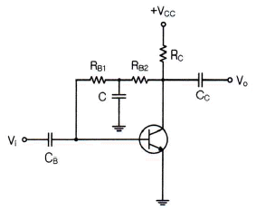
- 교류신호 이득 감소방지용 바이패스 콘덴서
- 콘덴서 C는 직류적으로 개방(Open)
- 콘덴서 C는 교류적으로 단락(Short)
- 교류신호 입력 시 베이스로 부궤환을 유도키위한 소자
(정답률: 71%)
5. 다음 그림과 같은 미분연산기에 입력파형을 구형파로 인가하였을 때의 출력파형은?
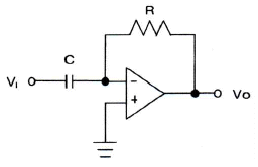
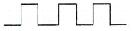
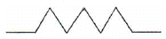
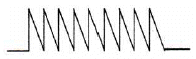
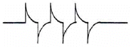
(정답률: 85%)
6. 다음 중 이상적인 연산증폭기의 특징이 아닌 것은?
- 입력 임피던스가 무한대이다.
- 대역폭이 무한대이다.
- 출력 임피던스가 무한대이다.
- 전압이득이 무한대이다.
(정답률: 72%)
7. 다음 중 하틀리 발진기에서 궤환 요소에 해당하는 것은?
- 저항성
- 용량성
- 유도성
- 결합성
(정답률: 81%)
8. 다음 중 발진 주파수가 변하는 주요 요인이 아닌 것은?
- 전원 전압의 변동
- 주위의 온도 변화
- 부하의 변동
- 대역폭의 변화
(정답률: 68%)
9. 아날로그 TV의 영상신호 전송에 사용되는 방식으로 한 쪽 측파대의 일부를 남겨 통신하는 방식은?
- VSB(Vestigial Side Band)
- DSB(Double Side Band)
- SSB(Single Side Band)
- FSK(Frequency Shift Keying)
(정답률: 76%)
10. AM 피변조파의 반송파, 상측파대, 하측파대의 각 전력성분의 비는? (단, m은 변조도이다.)
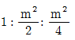
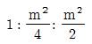
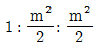
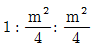
(정답률: 76%)
11. 다음 중 디지털 변복조 방식을 사용하는 디지털 통신 시스템을 설계할 때 설계 목표로서 거리가 먼 것은?
- 최대 데이터 전송률
- 최소 심볼 오류
- 최소 점유 대역폭
- 최대 전송 전력
(정답률: 65%)
12. 최고주파수가 15[kHz]인 신호파를 펄스변조할 경우 표본화의 최저 주파수는?
- 45[kHz]
- 30[kHz]
- 20[kHz]
- 15[kHz]
(정답률: 83%)
13. 다음 중 오버슈트(Overshoot)에 대한 설명으로 옳은 것은?
- 펄스 상승 부분의 진동의 정도를 말한다.
- 이상적 펄스의 상승 시각에서 진폭의 90[%]까지 이르는 것을 말한다.
- 이상적 펄스의 하강 시각에서 진폭의 10[%]까지 이르는 것을 말한다.
- 상승 파형에서 이상적 펄스 파의 진폭보다 높은 부분의 높이를 말한다.
(정답률: 81%)
14. 다음 중 전압의 특정한 레벨의 위 또는 아래를 자르기 위해 사용되는 회로는?
- 슈미트 트리거(Schmitt Trigger)
- 멀티바이브레이터(Multivibrator)
- 클리퍼(Clipper)
- 클램퍼(Clamper)
(정답률: 83%)
15. 다음 중 TTL(Transistor Transistor Logic) 회로의 특징이 아닌 것은?
- 집적도가 높다.
- 동작속도가 빠르다.
- 소비 전력이 비교적 적다.
- 온도의 영향을 적게 받는다.
(정답률: 72%)
16. 다음 그림의 회로에 해당하는 논리기호는? (단, 정논리이다.)
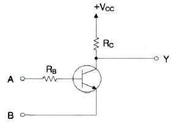
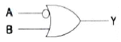
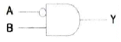
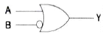
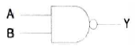
(정답률: 67%)
17. 다음 중 순서 논리 회로에 대한 설명으로 틀린 것은?
- 입력 신호와 순서 논리 회로의 현재 출력상태에 따라 다음 출력이 결정된다.
- 조합 논리 회로와 결합하여 사용할 수 없다.
- 순서 논리 회로의 예로 카운터, 레지스터 등이 있다.
- 데이터의 저장 장소로 이용 가능하다.
(정답률: 84%)
18. 4비트 5진 계수기의 상태를 올바르게 나타낸 것은?
- 0000 → 0001 → 0010 → 0011 → 0100 → 0000
- 0000 → 0001 → 0010 → 0100 → 1000 → 1001
- 0001 → 0010 → 0011 → 0100 → 0101 → 0000
- 0001 → 0010 → 0100 → 1000 → 1001 → 0000
(정답률: 84%)
19. 다음 중 인코더(Encoder)에 대한 설명으로 옳은 것은?
- 2진 코드형식의 신호를 출력 신호로 변환
- 해당 값에 맞는 번호에만 1을 출력하는 회로
- 여러 가지 2진수의 덧셈기로 형성된 회로
- 입력신호의 자료를 2진 코드로 변환
(정답률: 67%)
20. 다음에 설명하는 논리회로소자로 알맞은 것은?
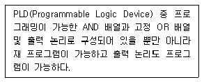
- PLA(Programmable Logic Array)
- GAL(Generic Array Logic)
- PLE(Programmable Logic Element)
- PAL(Programmable Array Logic)
(정답률: 71%)
2과목: 무선통신 기기
21. 다음 중 진폭변조(AM)에서 과변조가 발생한 경우 일어나는 현상이 아닌 것은?
- 피변조파에 많은 고조파가 포함된다.
- 점유 주파수 대역폭이 넓어지게 된다.
- 다른 통신에 혼신을 준다.
- 수신기에 과부하가 걸린다.
(정답률: 61%)
22. 다음 회로 중 FM 변조파에서 음성신호를 복조하는 기능을 수행하는 회로는?
- 스켈치(Squelch) 회로
- Foster-Seeley 회로
- 리미터(Limitter) 회로
- Pre-Emphasis 회로
(정답률: 64%)
23. 디지털 데이터값이 0일 때 cos2πf1t 신호가 출력되고, 디지털 데이터값이 1일 때 cos2πf2t 신호가 출력되는 변조기술은 무엇인가?
- ASK(Amplitude Shift Keying)
- FSK(Frequency Shift Keying)
- PSK(Phase Shift Keying)
- QAM(Quadrature Amplitude Modulation)
(정답률: 75%)
24. 다음 중 FDM(Frequency Division Multiplexing)과 비교한 OFDM(Orthogonal Frequency Division Multiplexing) 통신의 특성으로 틀린 것은?
- 주파수 이용 효율이 향상된다.
- 사용주파수의 대역 감소 효과가 있다.
- 다중경로에 강하다.
- 이동환경에 취약한 단점이 있다.
(정답률: 69%)
25. 레이더와 물체 사이의 거리를 구하는 식으로 알맞은 것은? (단, c=3×108[m/s], t=전파 왕복 소요 시간이다.)
- ct/2
- ct
- 2ct
- ct/4
(정답률: 80%)
26. 마이크로웨이브 통신에서 송신기의 출력이 37[dBm], 도파관(W/G)의 손실이 3[dB]일 때, 안테나 입력단에 인가되는 전력은 약 얼마인가?
- 1.5[W]
- 2.5[W]
- 5[W]
- 10[W]
(정답률: 71%)
27. 전파란 인공적인 매개물 없이 공간을 빛의 속도로 퍼져나가는 전기적 세력의 전달을 말하며 이 때 전파의 일반적인 특성에 해당되는 것이 아닌 것은?
- 반사성(Reflection)
- 회절성(Diffraction)
- 분산성(Dispersibility)
- 간섭성(Interference)
(정답률: 72%)
28. 지상으로부터 36,000km에 위치하여 지구의 자전주기와 위성의 공전 주기를 같게 하여 적도상에 같은 간격으로 3개 정도를 배치하여 전 세계를 커버할 수 있어 경제적인 위성 통신을 할 수 있는 방식은?
- 이동 위성방식
- 정지 위성방식
- 저궤도 위성방식
- 중궤도 위성방식
(정답률: 78%)
29. 다음 중 이종망간의 이동성 연동 및 연속성을 보장하는 기술이 아닌 것은?
- 이동서비스 제어기술
- 동적 인터워킹 기반 네트워크 통합기술
- 차세대 수동형 QoS(Quality of Service) 제어기술
- 시스템별 신호처리 플랫폼 기술
(정답률: 75%)
30. 다음에서 ㈀과 ㈁에 들어 갈 적절한 용어는?
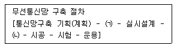
- ㈀ : 요구분석, ㈁ : 품질검사
- ㈀ : 요구분석, ㈁ : 장비발주
- ㈀ : 기본설계, ㈁ : 품질검사
- ㈀ : 기본설계, ㈁ : 장비발주
(정답률: 63%)
31. 40[kHz]의 대역폭을 갖는 신호전송 시 PCM(Pulse Code Modulation) 시스템에서 요구되는 최소 표본화 주파수는?
- 30[kHz]
- 40[kHz]
- 60[kHz]
- 80[kHz]
(정답률: 72%)
32. 다음 중 수신기의 S/N 비를 개선하기 위한 방법으로 적합하지 않은 것은?
- 주파수 변화 이득을 크게 한다.
- 수신기 대역폭을 넓힌다.
- 믹서 전단에 저잡음 증폭기를 설치한다.
- 국부 발진기의 출력에 필터를 설치한다.
(정답률: 78%)
33. 다음 중 직류전압을 교류전압으로 변환하는 장치는?
- 자동전압조정기(AVR)
- 컨버터(Converter)
- 인버터(Inverter)
- 변압기(Transformer)
(정답률: 84%)
34. 다음 중 태양전지에 대한 설명으로 틀린 것은?
- 태양전지의 기판 종류에는 단결정 실리콘 웨이퍼가 있다.
- 태양전지의 태양광의 광전효과를 이용하여 전기를 생산한다.
- 태양전지의 양단에 외부도선을 연결하면 P형쪽의 전자가 도선을 통해 N형 쪽으로 이동하게 되면서 전류가 흐르게 된다.
- 태양전지 에너지원은 청정, 무제한이다.
(정답률: 85%)
35. 다음 중 무선송신기에 대한 측정시험이 아닌 것은?
- 선택도
- 전력
- 왜율
- 대역폭
(정답률: 57%)
36. 다음 중 스펙트럼 분석기의 용도로 맞지 않는 것은?
- 펄스폭 및 반복률 측정
- 안테나 패턴 측정
- RF 간섭신호
- 변조의 직선성 측정
(정답률: 53%)
37. 다음 문장의 괄호 안에 들어갈 내용으로 적합하지 않는 것은?
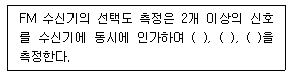
- 감도억압효과 특성
- 혼변조 특성
- 상호변조 특성
- 주파수 안정도 특성
(정답률: 73%)
38. 급전선의 종단을 개방했을 때의 입력측에서 본 임피던스를 Zf라 하고 종단을 단락했을 때의 임피던스를 Zs라고 할 때 특성임피던스 Zo는?
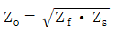
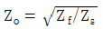
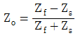
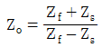
(정답률: 78%)
39. 정류기의 평활회로는 출력파형에서 맥동분을 제거하여 직류에 가까운 파형을 얻기 위해 어떤 여파기를 이용하는가?
- 대역소거 여파기
- 고역 여파기
- 대역통과 여파기
- 저역 여파기
(정답률: 73%)
40. 대전력 송신기용 정류기의 부하양단 평균전압이 3,000[V]이고, 맥동률은 1.5[%]라고 한다. 이때의 교류분은 몇 [V]인가?
- 4.5[V]
- 45[V]
- 450[V]
- 4,500[V]
(정답률: 72%)
3과목: 안테나 개론
41. 자유공간을 퍼져나가는 전자파의 평균포인팅 벡터가 1[W/m2]이다. 단위체적당 에너지밀도는?
- 약 1×10-9[J/m3]
- 약 2×10-9[J/m3]
- 약 3×10-9[J/m3]
- 약 5×10-9[J/m3]
(정답률: 70%)
42. 다음 중 전파에 대한 설명으로 옳은 것은?
- 전계와 자계가 X축 방향의 성분만 있는 경우를 말한다.
- 전파의 진행방향에는 전계와 자계가 없고 진행방향의 직각 방향에는 전계와 자계가 존재한다.
- 전계와 자계는 X, Y, Z축 전체에 모두 존재한다.
- 전계는 Z축, 자계는 Y축에 존재하는 파를 말한다.
(정답률: 79%)
43. λ/4 수직 안테나의 길이가 5[m]일 때 전파의 주파수는?
- 5[MHz]
- 10[MHz]
- 15[MHz]
- 20[MHz]
(정답률: 67%)
44. 다음 중 급전선의 정합에 대한 설명으로 틀린 것은?
- 급전선 단이 개방되어 있어도 선로의 길이가 무한히 긴 경우 반사파가 없는 전송이 가능하다.
- 반사파가 없는 전송의 경우 전압, 전류 분포는 선로 상 어느 점에서나 같다.
- 진행파의 경우 선로 상의 전압, 전류 위상은 각 점에 따라 다르다.
- 정재파는 임피던스 정합이 이루어진 경우에 발생되며 전송손실이 없으며 양 방향으로 진행하는 파이다.
(정답률: 67%)
45. 특성임피던스 300[Ω]인 전송선로에 100[Ω]의 부하를 접속할 때 전압정재파비는?
- 1
- 2
- 3
- 4
(정답률: 80%)
46. 임피던스 정합 회로 중 분포 정수 회로에 의한 정합이 아닌 것은?
- Q변성기에 의한 정합
- 스터브에 의한 정합
- S형 정합
- Y형 정합
(정답률: 69%)
47. 다음 중 동축케이블을 이용하여 도파관에 전력을 급전하는 방법에 대한 설명으로 옳은 것은?
- 도파관에 전력을 공급하는 것을 아이솔레이터라 한다.
- 여진방법으로는 방향성 결합기에 의한 방법이 있다.
- 작은 루프 안테나에 의한 여진은 자계에 의한 여진이다.
- 도파관은 안테나로서 동작을 하는 소자이다.
(정답률: 69%)
48. 도파관의 임피던스 정합에 대한 방법 중 도체봉(Post)에 의한 정합으로 잘못 설명된 것은? (단, L은 도파관 상부에서 삽입되는 봉의 도파관 내부 삽입길이 이다.)
- 봉 길이 L이 0.25λ보다 작으면 용량성
- 봉 길이 L이 0.25λ와 같으면 직렬 공진
- 봉 길이 L이 0.25λ보다 크면 병렬 공진
- 봉 길이 L이 0.25λ < L < 0.5λ 이면 유도성
(정답률: 68%)
49. 다음 중 수직접지안테나에 대한 설명으로 틀린 것은?
- 수직 편파를 발사한다.
- 길이가 λ/4일 때에는 반드시 전압급전을 사용하여야 한다.
- 수평면내 지향성은 무지향성이다.
- 길이가 λ/4보다 긴 경우에는 직렬로 콘덴서를 삽입해서 공진시킨다.
(정답률: 58%)
50. 다음 중 안테나의 공진주파수를 낮추기 위한 방법으로 적합한 것은?
- 안테나에 직렬로 인덕터를 연결한다.
- 안테나에 직렬로 커패시터를 연결한다.
- 안테나에 직렬로 저항을 연결한다.
- 안테나에 직렬로 저항과 커패시터를 연결한다.
(정답률: 65%)
51. 입력전력이 10[W], 효율이 80[%]인 안테나의 최대 복사 방향으로 10[km] 지점에서 전계강도가 10[mV/m]이었을 때, 이 안테나의 상대이득은?
- 7.4
- 8.4
- 15.5
- 25.5
(정답률: 41%)
52. 반파장 소자를 종횡으로 일정하게 배열하여 각 소자에 동위상 전류를 공급하면 한쪽 방향으로 지향성이 강해지는 안테나는?
- V형 안테나
- 롬빅 안테나
- 빔 안테나
- 제펠린 안테나
(정답률: 73%)
53. 다음 중 야기 안테나에 대한 설명으로 틀린 것은?
- 용도는 TV수신용 및 고정 통신용 등이다.
- 도파기 수를 증가시키면 이득이 커진다.
- 도선의 길이는 반사기, 투사기, 도파기 순으로 짧아진다.
- 도파기는 유도성분을 가지며, 전파를 유도한다.
(정답률: 49%)
54. 다음 중 대지의 도전율이 좋아 가상접지를 사용하지 않아도 되는 지역은?
- 건조지
- 바위산
- 수분이 많은 토지
- 건물의 옥상
(정답률: 84%)
55. 다음 중 지상파에 대한 설명으로 틀린 것은?
- 송수신점의 안테나 높이와 직접파의 가시거리는 직접적인 관계가 없다.
- 직접파는 송신점에서 수신점에 직접 도달하는 전파이다.
- 지표파는 도전성인 지구 표면을 따라서 전파하는 전파이다.
- 회절파는 대지의 융기부나 지상에 있는 전파 장애물을 넘어서 수신점에 도달하는 전파이다.
(정답률: 77%)
56. 대류권의 한 기단이 다른 기단과 접촉할 때 기상요소의 불연속면이 된다. 이 불연속면이 아닌 것은?
- 한냉전선
- 온난전선
- 정체전선
- 열화전선
(정답률: 67%)
57. 다음 중 전리층에서 반사될 때의 감쇠인 제2종 감쇠의 특징으로 틀린 것은?
- 전리층을 비스듬히 입사할수록 작다.
- 전자밀도에 비례한다.
- 평균 충돌 횟수에 거의 비례한다.
- 수평으로 입사할수록 크다.
(정답률: 63%)
58. 다음 중 태양 흑점의 수에 따른 전리층의 전리 현상으로 옳은 것은?
- 흑점 수가 증가할수록 전리 현상이 커진다.
- 흑점이 없으면 전리 현상은 ‘0’이 된다.
- 흑점 수가 증가할수록 전리층의 전자밀도는 감소한다.
- 흑점은 전리층에 영향을 미치지 않는다.
(정답률: 73%)
59. 전리층 전자밀도의 불규칙한 변동에 의해 전파가 전리층을 시각에 따라 반사하거나 투과함으로써 발생하는 페이딩은?
- 편파성 페이딩
- 흡수성 페이딩
- 도약성 페이딩
- 간섭성 페이딩
(정답률: 63%)
60. 어떤 파동의 파동원과 관찰자의 상대속도에 따라 진동수와 파장이 바뀌는 현상을 무엇이라 하는가?
- 에코(Echo)
- 도플러(Doppler) 효과
- 패러데이(Faraday) 법칙
- 플라즈마(Plasma) 현상
(정답률: 78%)
4과목: 전자계산기 일반 및 무선설비기준
61. 중앙처리장치에서 데이터를 임시 기억하는 장소로 레지스터를 사용한다. 이 레지스터(Register)는 중앙처리장치 내부에 있는 소규모의 임시 기억장치로 범용 레지스터와 특수 레지스터로 분류된다. 다음 중 특수 레지스터에 해당되지 않는 것은? (문제 오류로 실제 시험에서는 2, 4번이 정답처리 되었습니다. 여기서는 2번을 누르면 정답 처리 됩니다.)
- 데이터 레지스터
- 누산기(AC; Accumulator)
- 스택 포인터
- 다중 처리기(멀티 프로세서)
(정답률: 83%)
62. 그림과 같은 방식으로 Monitor 화면에 문자를 표시하기 위하여 사용되는 ROM(Read Only Memory)의 역할로서 맞는 것은?
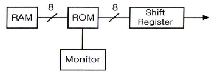
- 문자패턴을 기억한다.
- 제어 프로그램을 기억한다.
- 화면의 커서(Cursor) 위치를 기억한다.
- ASCII 코드를 기억한다.
(정답률: 69%)
63. 2진수 00111110.10100001을 16진수로 변환한 표현으로 옳은 것은?
- 4D.B1
- 4E.A1
- 3D.B1
- 3E.A1
(정답률: 68%)
64. 다음 중 코드에 대한 설명으로 틀린 것은?
- BCD(Binary Coded Decimal) 코드는 10진화 2진 코드로서 일반적으로 사용되고 있는 2진수를 10진수로 표현한 것이다.
- BCD 코드는 보수를 구하기 불편하다.
- Excess-3 코드는 BCD 코드에 3(0011)을 더한 코드이다.
- BCD 코드는 0~9까지만이 표현되기 때문에 1010, 1011, 1100, 1101, 1110, 1111의 6가지는 사용되지 않는다.
(정답률: 59%)
65. 다음 중 운영체제의 기능으로 올바른 것은?
- 데이터베이스 관리
- 바이러스 탐지 및 제거
- Disk Scheduling
- 음성 통신 및 채팅
(정답률: 64%)
66. 다음 중 CPU(Central Processing Unit) 스케줄링 기법에 대한 설명으로 옳은 것은?
- FCFS(First Come First Served) 스케줄링은 선점기법이다.
- SJF(Shortest Job First) 스케줄링은 현재 시점에서 가장 실행 시간이 짧은 프로세스를 먼저 수행하는 선점기법이다.
- SRF(Shortest Remaining Time First) 스케줄링은 현재 남아있는 시간이 가장 짧은 프로세스를 먼저 수행하는 선점기법이다.
- Round Robin 스케줄링은 시간이 일정하게 배정되는 기법이다.
(정답률: 61%)
67. 다음 중 펌웨어에 대한 설명으로 옳은 것은?
- 소프트웨어와 하드웨어의 특성을 가지고 있다.
- 하드웨어의 교체없이 소프트웨어 업그레이드만으로는 시스템 성능을 개선할 수 없다.
- RAM(Random Access Memory)에 저장되는 마이크로컴퓨터 프로그램이다.
- 시스템 소프트웨어로서 응용 소프트웨어를 관리하는 것이다.
(정답률: 74%)
68. 다음 중 마이크로프로그램(Micro Program)에 대한 설명으로 틀린 것은?
- 마이크로프로그램은 마이크로 명령어로 구성된다.
- 마이크로프로그램은 CPU(Central Processing Unit) 내의 제어장치를 동작시키는 프로그램이다.
- 마이크로프로그램은 처리속도가 빠른 RAM(Random Access Memory)에 저장한다.
- 마이크로프로그램은 각종 제어 신호를 생성한다.
(정답률: 68%)
69. 다음 중 프로그램카운터의 기능에 대한 설명으로 옳은 것은?
- 다음에 수행할 명령의 주소를 기억하고 있다.
- 데이터가 기억된 위치를 지시한다.
- 기억하거나 읽은 데이터를 보관한다.
- 수행 중인 명령을 기억한다.
(정답률: 78%)
70. 마이크로프로세서의 병렬처리 방식 중 동시수행가능 명령어 등을 컴파일러로 검출하여 하나의 명령어 코드로 압축하는 동시수행기법을 무엇이라 하는가?
- VLIW(Very Long Instruction Word)
- Super-Scalar
- Pipeline
- Super-Pipeline
(정답률: 71%)
71. 다음 중 전파법의 목적에 해당되지 않는 것은?
- 전파의 효율적인 이용 및 관리
- 전파이용 및 전파에 관한 기술의 개발촉진
- 전파 관련 분야의 진흥 도모
- 사회복지시설에 이바지
(정답률: 81%)
72. ‘주파수할당’에 관한 정의로 맞는 것은?
- 특정인에게 특정한 주파수를 이용할 수 있는 권리를 부여하는 것을 말한다.
- 특정인에게 특정한 주파수의 용도를 지정하는 것을 말한다.
- 개설하는 무선국이 이용할 특정한 주파수를 지정하는 것을 말한다.
- 무선설비를 조작하고자 하는 무선종사자에게 주파수 사용을 승인하는 것을 말한다.
(정답률: 81%)
73. 법령에서 무선국 개설허가를 받은 자가 준공기한의 연장사유가 합당하다고 인정될 때 총 연장기간은?
- 6개월을 초과할 수 없다.
- 1년을 초과할 수 없다.
- 1년6개월을 초과할 수 없다.
- 2년을 초과할 수 없다.
(정답률: 68%)
74. 다음 중 전파환경 및 방송통신망 등에 위해를 줄 우려가 있는 기자재로 적합성평가를 받아야 하는 것은?
- 수입용
- 수출용
- 시험용
- 연구용
(정답률: 72%)
75. 해당 무선국이 1년간 내야 할 전파사용료 전액을 미리 내려는 경우 얼마를 감면 받을 수 있는가?
- 100분의 5
- 100분의 10
- 100분의 15
- 100분의 20
(정답률: 77%)
76. 정보통신설비 공사에서 감리원 배치기준이 맞는 것은?
- 총공사금액 100억원 이상 공사 : 기술사
- 총공사금액 70억원 이상 100억원 미만인 공사 : 고급감리원 이상의 감리원
- 총공사금액 30억원 이상 70억원 미만인 공사 : 중급감리원 이상의 감리원
- 총공사금액 5억원 이상 30억원 미만인 공사 : 초급감리원 이상의 감리원
(정답률: 75%)
77. 정부에서 방송통신설비를 설치, 운용하는 자의 설비를 조사하는 경우가 아닌 것은?
- 재해, 재난 예방을 위한 경우
- 국가비상사태를 대비하기 위한 경우
- 방송통신설비 관련 시책을 수립하기 위한 경우
- 방송통신설비의 이상으로 소규모 방송통신장애가 발생할 우려가 있는 경우
(정답률: 66%)
78. 다음 중 기술기준 적합성 평가시험 전 확인사항으로 틀린 것은?
- 사용전류
- 사용 주파수
- 전파 형식
- 점유 주파수 대역폭
(정답률: 68%)
79. 무선설비 안테나의 지면과의 이격거리는?
- 2미터 이상
- 2.5미터 이상
- 3미터 이상
- 3.5미터 이상
(정답률: 81%)
80. 다음 중 무선국 및 전파응용설비의 검사업무 내용으로 틀린 것은?
- 검사관은 발주자가 지정한 검사요원이다.
- 검사는 무선국과 전파응용설비에 대한 준공･변경･정기 및 수시 검사가 있다.
- 표본무선국은 최초 준공신고 된 무선국 중 표본검사를 위해 추출한 무선국이다.
- 검사기관은 무선국 및 전파응용설비의 검사업무를 우임･위탁받은 한국방송통신전파진흥원이다.
(정답률: 72%)